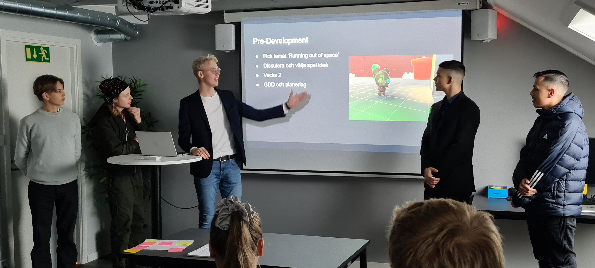
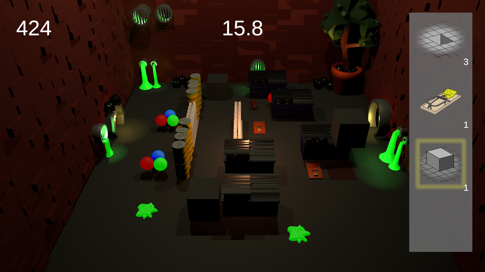

Rat on the run
Projektbeskrivning
I detta projektet skulle vi skapa ett spel i Unity från ett specifikt tema. Temat var “Running out of space” och vi fick tolka det hur vi ville när vi kom fram till en idé. Vi skulle utöver detta skapa ett Game Design Document (GDD) för hur vårt spel fungerade. Målet med spelet var att under det årliga jullanet på NTI Gymnasiet ha ett speltest där eleverna på skolan fick testa spelen.
Projektet
Vårt spel är ett assymetriskt tvåspelar-spel där en spelare spelar en råtta som försöker ta sig igenom ett rum som den andra spelaren försöker stoppa genom att placera ut hinder. I början av en runda får den andra spelaren en viss tid på sig att placera ut hinder. Sedan är det råttans tur att försöka undvika dessa.
Presentation

